词法分析｜从 RE 到 DFA
Lexical Analysis 词法分析-3
从正则表达式构造NFA
-
Thompson 算法 ：
- 将任何正则表达式转变为接受相同语言的 NFA
- 这个算法是语法制导的，也就是说它沿着正则表达式的语法分析树
自底向上递归地进行处理 对于每个子表达式，该算法构造一个只有一个接受状态的NFA
-
算法具体内容：
- 方法：
- 首先对 r 进行语法分析，分解出组成它的子表达式
- 构造一个 NFA 的规则分为基本规则和归纳规则两组
- 基本规则处理
不包含运算符的子表达式 - 归纳规则根据一个给定表达式的直接子表达式的 NFA 构造出这个表达式的 NFA
- 基本规则处理
- 基本规则
- 对于表达式∈，构造下面的 NFA
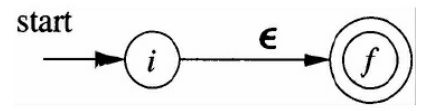 - 对于字母表 Σ 中的子表达式 a，构造下面的 NFA
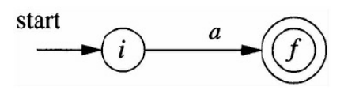 - i 和 f 都是新状态，分别是这个 NFA 的开始状态和接受状态
- 对于表达式∈，构造下面的 NFA
- 归纳规则
- 两个正则表达式的 并 的 NFA
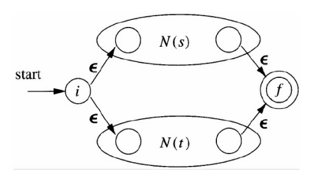 - 两个正则表达式的 连接 的 NFA
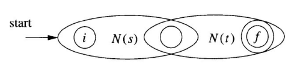 - 一个正则表达式的 闭包 的 NFA
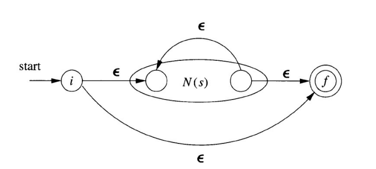
- 两个正则表达式的 并 的 NFA
- 方法：
-
Thompson 构造法的性质
- N(r) 的状态数最多为
r 中出现的运算符和运算分量的总数的 2 倍- 得出这个上界的原因是算法的每一个构造步骤最多只引入两个新状态
- N(r)
有且只有一个开始状态和一个接受状态 - N(r) 中除接受状态之外的每个状态要么有一条其标号为 Σ 中符号的出边，要么有两条标号为 ∈ 的出边
- N(r) 的状态数最多为
-
构造示例：
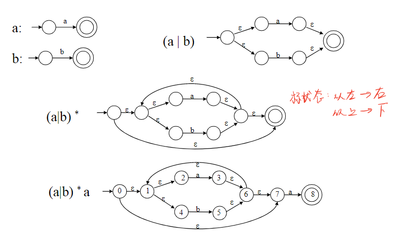 -
处理算法的效率
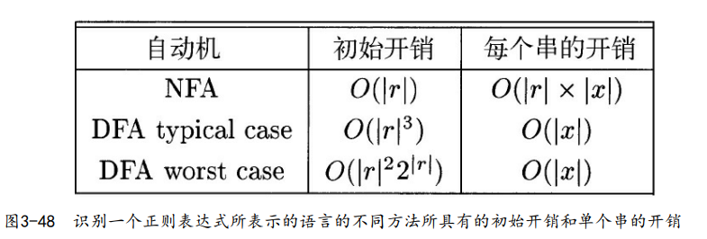
根据正则表达式构建DFA
-
在一个正则表达式 r 的右端连接一个独特的右端结束标记符
#，使得 r 的接受状态增加一个在 # 上的转换- 换句话说，通过使用扩展的（augment）正则表达式（r）#，我们可以在构造过程中不考虑接受状态的问题
- 当构造过程结束后，
任何在 # 上有离开转换的状态必然是一个接受状态
- 当构造过程结束后，
- 换句话说，通过使用扩展的（augment）正则表达式（r）#，我们可以在构造过程中不考虑接受状态的问题
-
抽象语法树的
叶子结点可以标号为∈，也可以用字母表中的符号作为标号- 对于每一个标号
不为∈的叶子结点，我们赋予一个独有的整数。我们将这个整数称为叶子结点的位置（position），同时也表示和它对应的符号的位置 - 请注意，一个符号可以有多个位置，抽象语法树中的这些位置对应于构造出的NFA中的重要状态
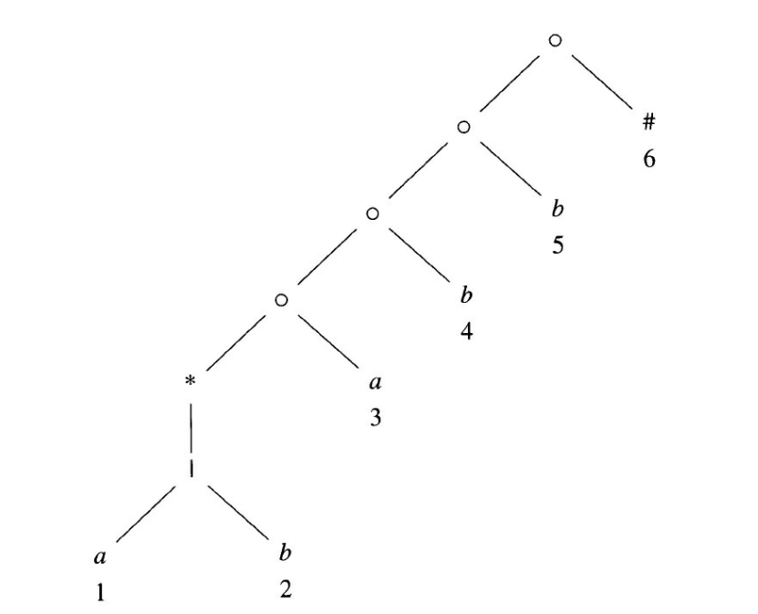
- 对于每一个标号
根据抽象语法树计算得到的函数
- 要从一个正则表达式直接构造出DFA，我们要首先构造它的
抽象语法树，然后计算如下四个函数：nullable、firstpos、lastpos和followpos- nullable(n) : 对于一个抽象语法树结点 n 为真当且仅当此结点代表的子表达式的语言中包含空串∈
- 也就是说，这个子表达式可以“生成空串”或者本身就是空串，即使它也可能表示一些其他的串
- firstpos(n) : 定义了以结点 n 为根的子树中的位置集合，这些位置对应于以 n 为根的子表达式的语言中某个串的
第一个符号 - lastpos(n) : 定义了以结点 n 为根的子树中的位置集合，这些位置对应于以 n 为根的子表达式的语言中某个串的
最后一个符号 - followpos(i) : 在增广正则表达式生成的字符串中，可以跟随位置i的位置集。
- nullable(n) : 对于一个抽象语法树结点 n 为真当且仅当此结点代表的子表达式的语言中包含空串∈
计算nullable、firstpos及lastpos
- 可以使用一个对树的高度直接进行递归的过程来计算 nullable 、firstpos 和 lastpos
- 计算方法：
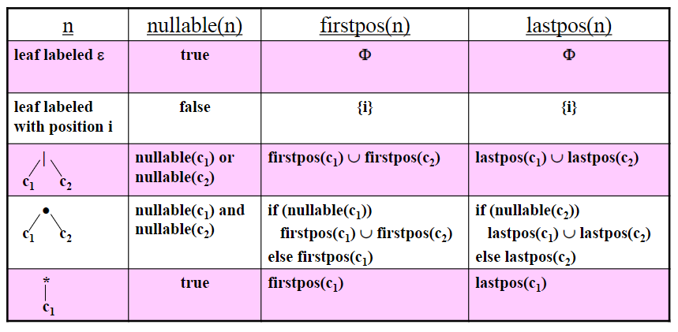 - 示例，其中，firstpos(n) 显示在结点 n 的左边，lastpos(n) 显示在结点右边
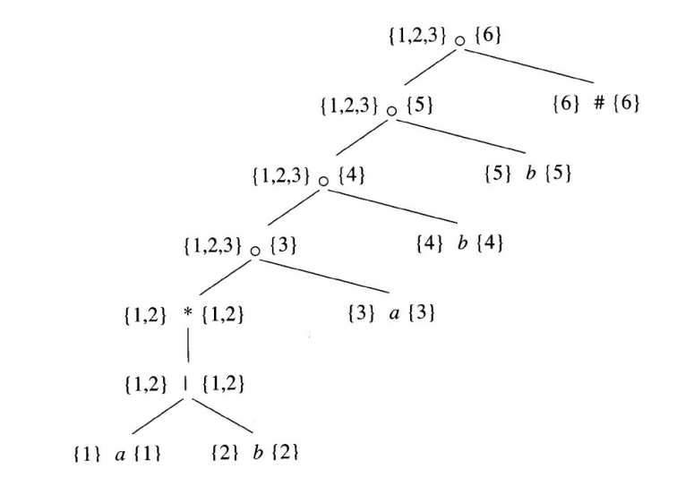- 每个叶子结点的firstpos和lastpos只包含它自身
- or 结点的firstpos和lastpos分别是它的所有子结点的firstpos和lastpos的并集
- 针对star结点的规则是，它的firstpos及lastpos分别是它的唯一子结点的firstpos和lastpos
计算followpos
-
只有两种情况会使得一个正则表达式的某个位置会跟在另一个位置之后：
- 如果 n 是一个 cat（连接） 结点，且其左右子结点分别为 c1、 c2，那么对于 lastpos（c1） 中的每个位置 i， firstpos（c2） 中的所有位置都在 followpos（i）中
- 如果 n 是 star 结点，并且 i 是 lastpos（n） 中的一个位置，那么 firstpos（n）中的所有位置都在 followpos（i）中
- 如果为每个节点计算了 firstpos 和 lastpos，则可以通过对语法树进行一次深度优先遍历来计算每个位置的后续位置。
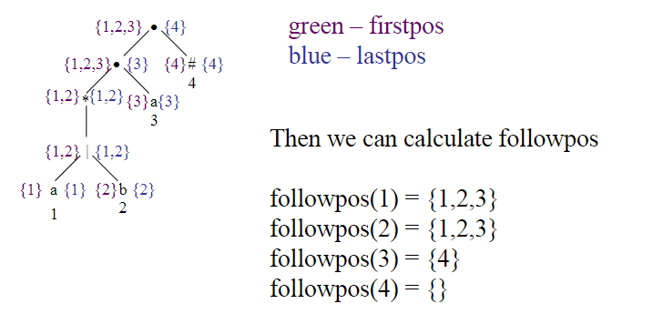
-
经过以下的处理，一个图可以变成 NFA
- 将根结点的 firstpos 中的所有位置设为开始状态
- 在每条从 i 到 j 的有向边上添加位置 i 上的符号作为标号
- 把和结尾 # 相关的位置当作唯一的接受状态
根据正则表达式构建 DFA
-
方法：
- 根据扩展的正则表达式 (r)# 构造出一棵抽象语法树 T
- 计算得到 T 的函数 nullable、firstpos、lastpos 和 followpos
- 使用下图所示的过程，构造出 D 的状态集 Dstates 和 D 的转换函数 Dtran
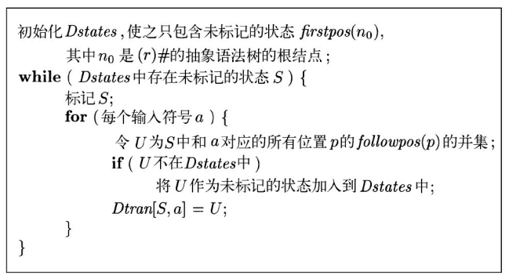
-
示例：
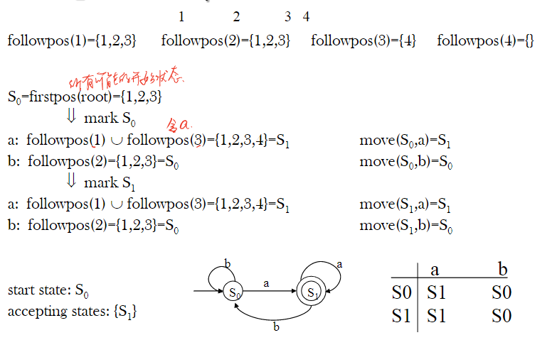
最小化一个DFA的状态数
Minimizing
-
如果只需改变状态名字就可以将一个自动机转换成为另一个自动机，那么这两个自动机是
同构的- 任何正则语言都有一个唯一的（不计同构）状态数目最少的DFA
-
如果分别从状态 s 和 t 出发，沿着标号为 x 的路径到达的
两个状态中只有一个是接受状态，那么串 x 区分状态 s 和 t- 如果存在某个能够区分状态 s 和状态 t 的串，那么它们就是
可区分的(distinguishable) - 空串 ∈ 可以区分任何一个接受状态和非接受状态
- 如果存在某个能够区分状态 s 和状态 t 的串，那么它们就是
-
DFA 状态最小化算法的工作原理：
- 将一个DFA的状态集合分划成多个组，每个组中的各个状态之间相互不可区分。
- 然后，将每个组中的状态合并成状态最少 DFA 的一个状态
-
DFA 状态最小化算法基本步骤
- 最初，该分划包含两个组：接受状态组和非接受状态组
- 从当前分划中取一个状态组，比如 A = {s1，s2，…，sk}，并选定某个输入符号 a，检查 a 是否可以用于区分 A 中的某些状态。
- 检查 s1，s2，…，sk 在 a 上的转换，如果这些转换到达的状态落入当前分划的
两个或多个组中，就将 A 分割成为多个组，使得 si 和 sj 在同一组中当且仅当它们在 a 上的转换都到达同一个组的状态 - 重复这个分割过程，直到无法根据某个输入符号对任意个组进行分割为止。
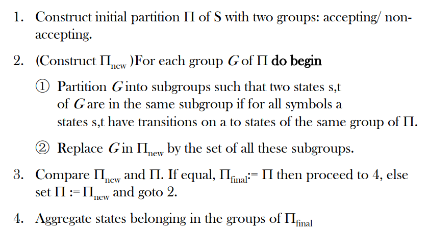
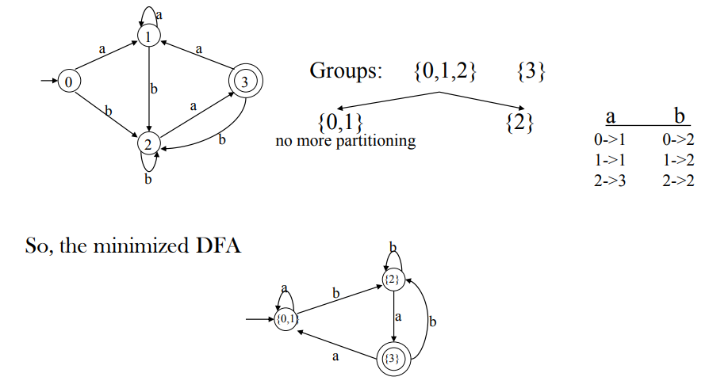
本博客所有文章除特别声明外，均采用 CC BY-SA 4.0 协议 ，转载请注明出处！